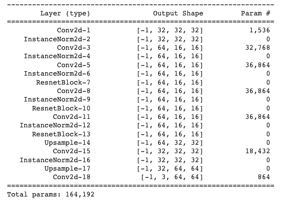

Learning-Based Image Synthesis
WHEN? Spring 2022
WHO? Tomas Cabezon
WHY? 16-726 Image Synthesis
WHERE? Carnegie Mellon
This pages shows the different projects developed in the claas Image Synthesis with
professor Jun-Yan Zhu. Just click on the following sections to expand each project:
In this project, we will explore neural style transfer which resembles specific
content
in a certain
artistic style. For example, generate cat images in Ukiyo-e style. The algorithm
takes
in a content
image, a style image, and another input image. The input image is optimized to match
the
previous
two target images in content and style distance space.
In the first part of the assignment, we will start from random noise and optimize it
in
content
space. It will help us get familiar with the general idea of optimizing pixels with
respect to
certain
losses. In the second part of the assignment, you will ignore content for a while
and
only optimize
to generate textures. This builds some intuitive connection between style-space
distance
and gram
matrix. Lastly, we combine all of these pieces to perform neural style transfer.
This project is based in two articles by Gatys et al. Texture Synthesis Using
Convolutional
Neural
Networks and A
Neural
Algorithm of Artistic Style. The oficial Pytorch tutorial can be found here.
Content Reconstruction
For the first part of the assignment, you will implement content-space loss and
optimize
a random
noise with respect to the content loss only.
Content Loss: The content loss is a metric function that measures the content
distance
between two
images at a certain individual layer. Denote the Lth-layer feature of input image X
as
fXLand that
of target content image as fCL. The content loss is defined as
squared
L2-distance of these two
features:
To extract the feature, a VGG-19 net pre-trained on ImageNet is used. The
pre-trained
VGG-19 net
consists of 5 blocks (conv1-conv5) (with a total of 15 conv layers) and each block
serves as a
feature extractor at the different abstract levels. In the following images the
influence of the
layer election can be seen, higher layers
capture content better than lower layers. Actually, from conv_1 to conv_3 there is
barely
difference, however, on higher layers, for example with conv_11, the content of the
image can be
barely seen, and the image is mainly noise.

Conv_5 layer, my favorite, will be used to reconstruct other images from an input
noise:

Texture Synthesis
Now we will implement style-space loss.
Style loss: How do we measure the distance of the styles of two images? In
the
course, we
discussed
that the Gram matrix is used as a style measurement. Gram matrix is the correlation
of
two
vectors
on every dimension. Specifically, denote the k-th dimension of the Lth-layer feature
of
an image
as
fLk in the shape of (N,K,H∗W). Then the gram matrix is
in the shape of (N, K, K).
The idea is that two of the gram matrix of our optimized and predicted feature
should be
as
close as possible. In the following images we can see the influence of the different
style
layers selected to generate the texture. Lower layers mantain the color better,
while
deeper
layer don't mantain them and show more a noisy color. However, deeper layers mantain
some
elements, for example, in the bottom left, some eyes can be seen in the texture
image.

The results using the layers from conv_1 to conv_7 are the favorites, so this
arrangement will
be used to generate textures from noise.


Style transfer
Finally, it is time to put pieces together! We will use conv_5 as content
feature
and
conv_1-conv_7 as style feature. The style weight is set to 1000000 and the
content
weight is
set to 1. We use L-BFGS optimizer to and optimized input image for 300 steps.
The following images show the style transfer of two different styles on two
different
images.

In the following images the influence between the noise and content image
initialization can be
seen. In terms of time both take the same time, however, if we tried different
number of epochs
to change the results, the times may change. On the other hand, we can see that
the
content
initialization mantains the texture better, actually, in the sky, we can see
similar
strokes as
the ones in Van Gogh's masterpiece. Furthermore, the overall structure of the
image
is better,
the elements can be better distinguised.


(CPU times: user 25.3 s)
(Wall time: 25.9 s)
Now let's try this style transfer on... Kiki! She is always around while I do
the
homework, so
she will enjoy seeing herself in different styles!

In this project, we will explore coding and training of GANs (Generative
Adversarial
Networks). This
assignment is divided into two
parts: in the first part, we will implement a specific type of GAN designed to
process images,
called a Deep Convolutional GAN (DCGAN). We’ll train the DCGAN to generate cats
from
samples of
random noise. In the second part, we will implement a more complex GAN
architecture
called CycleGAN,
which was designed for the task of image-to-image translation.
We’ll train the CycleGAN to convert between different types of two kinds of cats
(Grumpy and Russian
Blue) and apples to oranges.
Deep Convolutional GAN
or the first part of this assignment, we will implement a Deep Convolutional GAN (DCGAN) as introduced by Radford et al. A DCGAN is simply a GAN that uses a convolutional neural network as the discriminator, and a network composed of transposed convolutions as the generator. To implement the DCGAN, we need to specify three things: 1) the generator, 2) the discriminator, and 3) the training procedure. We will develop each of these three components in the following subsections.
Discriminator
The discriminator in this DCGAN is a convolutional neural network that has the following architecture:
In each of the convolutional layers shown above, we downsample the spatial dimension of the input volume by a factor of 2. Given the input-output relation equation and that we use kernel size K = 4 and stride S = 2, the padding for each convolution is:
Bellow a summary of the discriminator implemented can be seen. The sizes of the outputs of each layer can be seen as well as the number of parameters that were trained. After each convolution operation, ReLU activation has been used a except from the last layer, the 5th Conv2d layer.
Generator

The generator of the DCGAN consists of a sequence
of transpose convolutional layers(we will implement upsampling and posterior
conv2d)
that progressively
upsample the input noise sample to generate a fake image.
Before each of the convolutional layers shown above, we upsample the spatial
dimension of the input
volume by a factor of 2. Given the input-output relation equation and that we
use
kernel size K = 3 and
stride S =
1, the padding for each convolution is:
Bellow a summary of the generator implemented can be seen. The sizes of the outputs of each layer can be seen as well as the number of parameters that were trained. After each convolution operation, ReLU activation has been used a except from the last layer that used a Tanh activation.
Training the loop
Next, we implemented the training loop for the DCGAN. A DCGAN is simply a GAN with a specific type of generator and discriminator; thus, we train it in exactly the same way as a standard GAN. The pseudo-code for the training procedure is shown below.

Results
To train the DCGAN we have used basic (normalization) and deluxe data augmentation techniques (random crop and horizontal flips).In the following plots, we can see the influence of the data augmentation techniques. One of the main problems when training GANs is overfitting, this occurs when the data used for trainning is so small that the model memorizes it, which deteriorates the performance. Therefore, using data augmentation techniques increases the number of training examples improving the the training.
200 iterations
200 iterations
To further improve the data efficiency of GANs, we have also applied differentiable augmentations discussed in this paper. In the plots bellow we can see the influence of this tecnique. The discriminator loss is higher this time, as it is more difficult to differentiate real images from the fake ones, which also makes the generator loss to reduce.
200 iterations
200 iterations
The outputs of training the models for 200 iterations and 6500 iterations are
the
following:
- For basic data augmentation:
- For deluxe data augmentation:
In the previous images we can see the influence of this data augmentation technique in the quality of the output images, even when the number of iterations for training is the same.
- For deluxe data augmentation with differentiable augmentation:
Here we can see how the model crashed when used differentiable augmentation and thee model doesn't improve:
6500 iterations
CycleGAN
In the second part of this assigment, we are going to implement a CycleGAN as introduced by Zhu et al. CycleGANs are particularly interesting because they allow to use un-paired training data. This means that in order to train a model to translate images from domain X to domain Y , we do not have to have exact correspondences between individual images in those domains as it is the case for image-to-image translation.
Generator

The generator in the CycleGAN has layers that implement three stages of
computation:
1) the first stage
encodes the input via a series of convolutional layers that extract the image
features;
2) the second stage then transforms the features by passing them through one
or
more residual
blocks;
3) the third
stage decodes the transformed features using a series of transposed
convolutional
layers, to build an
output image of the same size as the input.
The residual block used in the transformation stage consists
of a convolutional layer, where the input is added to the output of the
convolution.
This is done so
that the characteristics of the output image (e.g., the shapes of objects) do
not
differ too much from
the input.
Bellow a summary of the generator implemented can be seen. The sizes of the
outputs
of
each layer can be seen as well as the number of parameters that were trained.
After
each convolution
operation, ReLU activation has been used a except from the last layer that used
a
Tanh activation.

PatchDiscriminator
CycleGAN adopts a patch-based discriminator. Instead of directly classifying an
image to be real or
fake, it classifies the patches of the images, allowing CycleGAN to model local
structures better. To
achieve this effect, we reduce the spatial outputs to a dimension of 4x4 instead
of
a
scalar, 1x1, as before.
Bellow a summary of the discriminator implemented can be seen. The sizes of the
outputs of
each layer can be seen as well as the number of parameters that were trained.
After
each
convolution operation, ReLU activation has been used a except from the last
layer.
Training the loop
To train the CycleGan we implement the following training procedure:

Cycle Consistency
The most interesting idea behind CycleGANs (and the one from which they get their name) is the idea of introducing a cycle consistency loss to constrain the model. The idea is that when we translate an image from domain X to domain Y, and then translate the generated image back to domain X, the result should look like the original image that we started with. The cycle consistency component of the loss is the mean squared error between the input images and their reconstructions obtained by passing through both generators in sequence (i.e., from domain X to Y via the X->Y generator, and then from domain Y back to X via the Y->X generator). The cycle consistency loss for the Y->X->Y cycle is expressed as follows:

Results
In the following image we can see the influence of the cycle consistency loss in
the
output results. In
the first two images the results of training from domain X to Y and viceversa
with
and withouth cycle
consistency are shown:
X -> Y: from Russian Blue to Grumpy
Y -> X: from Grumpy to Russian Blue
In the previous image we can seee that introducing the cycle consistency loss
improves
the results, and
reduces the visual artifacts. Therefore, the second training, with cycle consistency
loss, has been
continued until 10000 iterations. The results can be seen bellow:
In the following experiments, we can compare the previous results, using
PatchDiscriminator, with the
results using the previous DCDiscriminator. We can see that the PatchDiscriminator,
another of thee
differences between DCGAN and CycleGAN improves the results for domain
transformation.
The same experiments were carried out with the apple/orange dataset, observing the
same
results, the cycle
consistency loss as well as using PatchDiscriminator improved the results.
X -> Y: from apples to oranges
Y -> X: from oranges to apples
Results after 10000 iterations using PatchDiscriminator:
Results after 10000 iterations using PatchDiscriminator or DCDiscriminator:
I think it is very interesting that in the orange dataset, there are a lot of images
of
the open fruit,
however, in the apple dataset they are very little. Furthermore, oranges are orange
in
the inside, so same
color inside as outside, but apples, are white in the inside. The problem has
trouble
learning this an in
the results we can see apples that are red on the inside. Another thing that catched
my
atttention, was that
the big mayority of the apples are red, so when the model sees a green apple, it
doesn't
convert it into an
orange.
Bells & Whistles
Spectral normalization
Applies spectral normalization to a parameter in the given
module.
Spectral normalization stabilizes the training of discriminators in Generative
Adversarial Networks
(GANs) by rescaling the weight tensor with spectral norm σ(sigma) of the weight
matrix calculated using
power iteration method.
When Kim Kardashian meets GANs

If I was going to create a dataset to train a GAN it couldn't be any other than the queen of the selfies. To train this GAN I collected a dataset of 148 images of her intagram:

When Kim Kardashian meets CycleGANs
I didn't manage to do train a good GAN for Kim K because of the small dataset I
generated (or maybe because she is so unique and irrepliclable 😜). Also, I
realized, that as we commented in class, the images should have been better
preprocessed, for example,
aligning the face in all the training images.
Nevertheless, I got a meme:
If you don't understand the meme, you can take a look at this spanish famous
Ecce Homo Fresco restoration.

In this project, we will exprole gradient-domain processing, a simple technique
with
a
broad set
of applications
including blending, tone-mapping, and non-photorealistic rendering. For this
assigment,
we will
focus
on 'Poisson blending', 'mixed gradients' and 'color2gray'.
The primary goal of this assignment is to seamlessly blend an object or texture
from
a
source image
into
a target image. The method presented above is called “Poisson blending” and uses
the
gradients of
both
of the images that we want to combine to make transition as smooth as possible.
This
was
introduced
by
Perez et al. in this 2003 paper.
In the previous image, in the left, we have the target image, in which we want
to
add
another image,
what we will
call, the source image, in this case, a bear. Next to it, we have the naive
blend, a
simple
copy and paste using a mask. This however, doesn't give good result, therefore,
on
the
right,
Poissong
blending has been applied.
Process
Gradients
To understand Poisson, blending, first we need to understand what a gradient is. As in calculus, a gradient is the derivative of a function, in this case, the derivative of each pixel. But how do we calculate this? To do so, we have to start by thiking what a derivative is: the rate of change of a function in a given direction. In the case of pixels, this is calculated by comparing the different values of the pixels in a given direction. Let's imagine the following 3x3 image with values for the each pixel of [[0, 1, 2],[3, 4, 5],[6, 7, 8]]. The derivatives of the p4 pixel will be defined by its 4 neighbours: p3 to the left, p5 to the right, p0 going up, and p7 going down. So the derivatives can be written as follow:
← p3-p4=3-4=-1
→ p5-p4=5-4=+1
↑ p1-p4=1-4=-3
↓ p7-p4=7-4=+3
Toy problem
Before implementing the Poisson blending algorithm, we are asked to solve a toy problem. In this example we’ll compute the x and y gradients from an image s, then use all the gradients, plus one pixel intensity, to reconstruct an image v. If the implementation is correct, the output should recover the input image. Let's denote the intensity of the source image at (x, y) as s(x,y) and the values of the image to solve for as v(x,y). For each pixel, then, we have two objectives:
- Minimize ((v(x+1,y)−v(x,y))−(s(x+1,y)−s(x,y)))2, so the x-gradients of v should closely match the x-gradients of s.
- Minimize ((v(x,y+1)−v(x,y))−(s(x,y+1)−s(x,y)))2, so the y-gradients of v should closely match the y-gradients of s.
The result after minimizing the objectives:
Poisson blending
In order to make a seamless transition between any two images we need to think about the gradients of both of the images rather than about the overall intensity. This problem consists in finding the right values for the target pixels that maximally preserve the gradient of the source region, without changing any of the background pixels. Note that we are making a deliberate decision to ignore the overall intensity, so somo color change could occur, as seen before, a brown bear could turn black, but it would still look like a bear.

We can formulate our objective as a least squares problem. Given the pixel
intensities
of the source
image “s” and of the target image “t”, we want to solve for new intensity values
“v”
within the
source
region “S”:
In the previous formula, we can see that we are summating the pixels of the
region
“S”.
This region
represents the points of the source image that we want to copy in the target
image.
For
this task,
we
were given the following code, to create the mask and align it with both the
source
and
target
images.
In the formula,each “i” is a pixel in the source region “S”, and each “j” is a
4-neighbor of “i”.
Each
summation
guides the gradient values to match those of the source region. In the first
summation,
the gradient
is
over two variable pixels; in the second, one pixel is variable and one is in the
fixed
target
region. In
the first part, we set the gradients of “v” inside "S" while on the second part,
we
set
the
gradients
around the boundary of “S".
To solve for v, we have used the scipy.sparse.linalg.lsqr function. This
function
minimizes our
least
squares problem with the form of (Av-b)2. It returns the v values
that
minimize
the gradients and that are used to generate the output image.
Results
Kiki travels
For this example I have tried to take Kiki, my cat, around so she can explore
new
places. I have
used
the Poisson blending algorithm to take her with me to CMU on an snowy day. I
have
also
taked her to
the
beach, a place I could also take myself too...
Kiki in CMU:

Kiki in the beach:
I am pretty surprised with the results! However, some artifacts can be seen in the image of Kiki at CMU. Between her ears the fence of the tenis court disappears. On the beach case, the output image makes Kiki too dark due to the gradients. Furthermore, the blending is not as good as in the previous image. This is because the background colors matched better in the previous example.
Naruto's Deidara
When I was young I used to read Naruto's comics. Back then I was a fan of one of
the
characters,
Deidara, that had mouths in her hands:
Using this algorithm I have been able to be like her, at least virtually.
Trying jewelry
I really enjoy designing rings or other kind of wearables, so I thougt that this could be a great opportunity to inquire the possibilities of poisson blending algorithm for trying jewelry.
I think this is a great tool to create rapid mockup images whithout
espending a
lot
of time on
making a perfect mask around the ring. In this example we can also see what we
mentioned
before,
that
this algorithm changes the color of the objects. Actually, the color of the
silver
ring
dissapears
as it
fuses with the color of the skin.
After seeing this results, I wondered how this algorithm would
work with a more complex shape... so I tried it!
This time the results are not as surprising as before. Mainly because I lost all my hair in the procces due to the blending. To solve this problem, I applied the mixed gradients algorithm in the bells and whistles of this assigment.
Bells and Whistles
Mixed gradients
To solve the above seen problem, in this section we will implement the mixed
gradients
algorithm for
images where transparency important. In this algorithm we follow the same steps
as
in
Poisson
blending,
but
instead of using the gradients in the source image, we use the gradient with
larger
magnitude in
either
source or target image as the guide:
The results of applying this algorithm to the previous image

Mixed gradients works very well in this example. Nevertheless, this algorithm makes the source image too transparent. This is something we need to have into account when deciding which algorithm we are going to use. For example in the following images, we can see the results of applying mixed gradients to the Kiki goes to the beach image.
Although both of the images are seamlessly blended, when applying this algorithm, the source image may seem to became more transparent, is we zoom in, we can see that the beach can be seen thorugh Kiki's fur. This is because inside the region S, we now also consider the gradients of the target image.
Color2gray
For this part of the assigment, we will see another application of these
blending
algorithms,
color2gray
transformation. When converting a color image to grayscale (e.g., when printing
to a
laser printer),
we
lose the important contrast information, making the image difficult to
understand.
To
see this, we
will
use the images used for testing color blindness. As it can be seen bellow, when
this
images are
converted into grayscale, no longer show the numbers. To solve this, we are
going to
use
this
blending
techniques to create a gray image that has similar intensity to the rgb2gray
output
but
mantaining
the
contrast of the original RGB image.
To do this, we first convert the RGB image into HSV(Hue Saturation Value) space.
In
the
image bellow
we
can see the example image as an RGB image on the left, and next to it the
correspondent
images of
each
of the HSV channels.
In the HSV space, we can examine the color of an image, the intensity of that
image
and
the
brightness.
The image representing the brightness, is similar to the rgb2version. Therefore,
to
create our
color2gray version, we will use the S and V channels of the image and approach
it as
a
mixed
gradients
problem. We will use the white pixels of the original image to generate a mask.
The
results of this
color2gray:
Sergey Mikhaylovich Prokudin-Gorsky was a chemist and photographer of the Russian Empire. He is best known for his pioneering work in color photography and his effort to document early 20th-century Russia. In imitation to the way the human eye senses color, in his pothograps the visible spectrum of colors was divided into three channels of information by capturing it in the form of three black-and-white photographs, one taken through a red filter, one through a green filter, and one through a blue filter.

Those original negative images (available in the Library of Congress) are going to be used in this assignment to compose the color photographs. Due to the way the images were captured using three different cameras, as it can be seen in the image above, the negatives are not aligned. Therefore, to generate the RGB images, these negatives first need to be preprocessed.
Proccees

To generate the final image, we need to divide the initial image into red, green, and blue channels. Actually, the original glass negatives are ordered in blue, green, and red order from top to bottom Then, as we can see in the gif image, we have to find the correct alignment of the three taking one of them as the base, in our case the blue channel. Once the alignment is found, we can combine the three channels.
Search Methods
As matching criteria, two different metrics have been considered, the Sum of the
Square Differences
(SSD) and the normalized Cross-Correlation (NCC):
The Sum of Squared Differences is calculated based on the following equation,
where F and G are both of the arrays we are comparing and
h,w
the corresponding
pixels at a given height and width. The best alignment will be the one with the
lower NCC value, this is
the argmax of the previous equation.
The Normalized Cross-Correlation is calculated based on the following equation
where
as the name
suggests,both of the arrays are first normalized
where μF and μG are the average of F and
G respectively. The bestalignment will be the one with the highest value
Image Pyramid
For higher dimension images, the previous brute force approach is not feasible, as the number of possible alignment combinations increases, which is translated in a higher computation time. For those images, the pyramid algorithm is used. This algorithm consists in creating a multi-scale representation of the image. On each level the image is reduced by half, to do so, previous two the downsampling, a Gaussian filter is applied to prevent wrong aliasing in the process. In my case, I have downsampled the images until reached a dimension similar to the cathedral image, where we have seen that the initial search on a 15x15 grid is feasible. The search for the correct alignment is started with this smaller dimension of the image and then is translated to higher dimensions. Every time we look for the correct alignment on a higher dimension image, the previous displacement is taken into account and a new 3x3 displacement grid is considered.
Bells and Whistles
Automatic cropping
Due to the alignment process, we can see that the borders of the resulting photographs have strange colors due to the three channels displacement and the black and white borders of the original glass negatives. To find those borders a Sobel filter has been applied both vertically and horizontally. The absolute values of the outputs have been considered and then combined vertically and horizontally to find the respective borders.

Crops: (126, 118, 222, 317)
Gradient for the alignment
Some of the images, such as the emir or the village images, may be more difficult to align. This is because our alignment metric is based on the pixel values of the three images, however, this may not be a good approach as the pixel values may vary a lot in the different channels, as it is the case of the emir’s clothing, that is blue, so it will have higher pixel values in that channel but not in the others. In that case, we can use the same search metric but instead of using the pixel values, we could use other image features, as it can be the gradient to find the best alignment.

G:(65, 10) R:(136, -4)

G:(64, 11) R:(137, 22)
Automatic contrast
Sigmoid function has been used to apply automatic contrast to the image and improve the perception of it.
Sigmoid: alpha=6 betha=2.5
Results
The final alignment results of our methods on all the input images can be seen below.